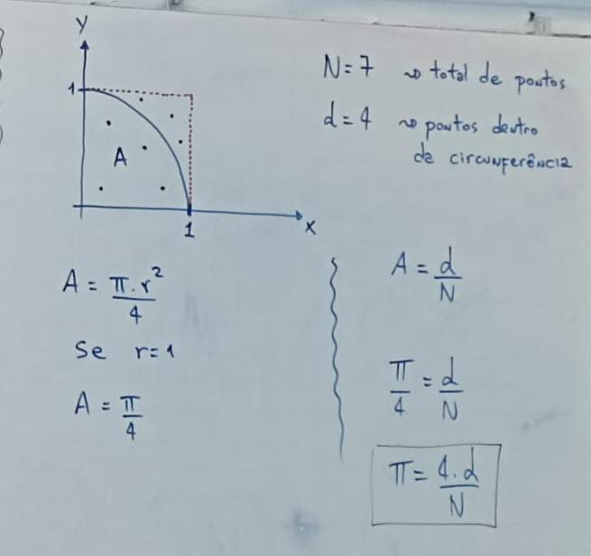

*Método de Monte Carlo
É Um método Numérico estatístico utilizado para o cálculo de integrais.
Falando de uma forma simplificada, uma integral é uma operação
matemática que serve para o cálculo de áreas.
Utilizando o método de Monte Carlo é possível estimar computacionalmente o valor do número π.

π =
tg 45° = 1
tg π/4 = 1
atan(tg π/4) = atan 1
π/4 = atan 1
π = 4 . atan 1